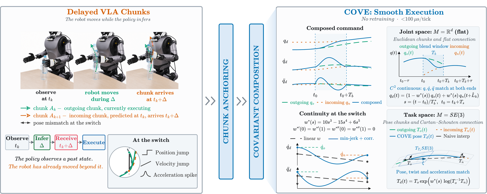
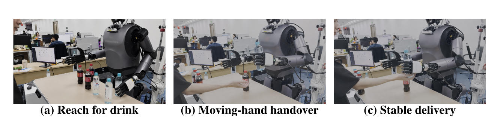

A controller-side compositor that turns asynchronous VLA action chunks into smooth, latency-aware command streams without policy retraining.
Vision-Language-Action policies often execute manipulation through short-horizon action chunks, but real-time deployment creates a mismatch: each chunk is conditioned on a delayed observation while the robot has already evolved by the time that chunk reaches the controller. Consecutive chunks can therefore disagree, creating discontinuities in the executed command stream. COVE is a lightweight controller-side layer that converts asynchronous VLA outputs into continuous, reactive commands. It composes overlapping chunks using a covariant minimum-jerk rule that guarantees C2 continuity at chunk boundaries, combines latency-aware lookahead with uncertainty-weighted mid-chunk observation fusion, requires no policy retraining, and runs in under 85 µs. Across simulation/replay and real hardware, COVE reduces chunk-boundary velocity jumps while preserving or improving task success.


The hardware policy is a fine-tuned GR00T-N1 policy evaluated on 200 held-out real-robot trials per execution condition. Lower p95 velocity jump and peak torque are better; success is reported with 95% binomial confidence-interval half-width.
| Execution layer | p95 vel. jump [rad/s] ↓ | Peak torque [Nm] ↓ | Success [%] ↑ |
|---|---|---|---|
| Replace-on-arrival | 4.82 | 48.5 | 60.0 ± 6.8 |
| RTC only | 1.12 | 18.6 | 68.0 ± 6.5 |
| COVE | 0.65 | 14.1 | 70.0 ± 6.4 |
| COVE⊕RTC | 0.58 | 13.4 | 72.0 ± 6.2 |
Qualitative real-robot trials. Part 1 compares COVE with RTC and temporal ensembling during the placing phase; Part 2 shows pick-and-place rollouts using COVE.
Part 1: Placing
Side-by-side comparison of real-robot placing behavior using COVE, RTC, and temporal ensembling.
Part 2: Pick and Place
Real-robot pick-and-place rollouts using COVE.
Appendix real-robot ablation: 50 trials per condition on the bartender handover platform. The same fine-tuned policy and platform are used while toggling COVE's reactive input.
| Execution layer | Final hand-target error [cm] ↓ | Vel. jump [rad/s] ↓ |
|---|---|---|
| Replace-on-arrival | ∼12.0 | 4.82 |
| COVE, no reactive input | ∼5.5 | 0.65 |
| COVE, full reactive | ∼1.5 | 0.50 |
RoboCasa reports cached-chunk simulation/replay, while LIBERO reports the online PI05 rollout sweep. Lower command discontinuity is smoother; success is reported in percent.
| Execution layer | Jv / Vel. jump [rad/s] ↓ | Jerk ↓ | Success [%] ↑ |
|---|---|---|---|
| Replace-on-arrival (R7) | 18.36 ± 1.38 | 1.00 ± 0.15 | 42.9 ± 6.3 |
| Temporal ensembling (R7) | 8.79 ± 0.74 | 0.76 ± 0.14 | 40.8 ± 6.3 |
| RTC only (R7) | 6.80 ± 0.63 | 0.84 ± 0.15 | 44.6 ± 6.4 |
| COVE | 3.92 ± 0.31 | 1.00 ± 0.20 | 40.1 ± 6.2 |
| COVE⊕RTC | 2.35 ± 0.26 | 0.86 ± 0.17 | 43.8 ± 6.4 |
Evaluation uses LIBERO's native 20 Hz relative-R7 control interface, with 600 paired rollouts per method. We report success and the mean p95 action jump at chunk handoffs over successful rollouts (lower is better); brackets indicate 95% bootstrap confidence intervals.
| Execution layer | p95 handoff action jump ↓ | Success [%] ↑ |
|---|---|---|
| Replace-on-arrival | 0.258 [0.236, 0.281] | 93.7 [91.7, 95.5] |
| Temporal ensembling | 0.189 [0.182, 0.196] | 81.7 [78.5, 84.7] |
| RTC only | 0.140 [0.137, 0.143] | 95.2 [93.3, 96.8] |
| COVE | 0.194 [0.181, 0.210] | 95.3 [93.5, 96.8] |
| COVE⊕RTC | 0.137 [0.134, 0.140] | 92.7 [90.5, 94.7] |
PI05 rollouts on all 10 LIBERO tasks at the native 20 Hz control rate. Each task shows the five execution layers; labels report the outcome of the displayed rollout, not the aggregate success rate.
LIBERO-10 Task 3 Command
Put the black bowl in the bottom drawer of the cabinet and close it.
LIBERO-10 Task 5 Command
Pick up the book and place it in the back compartment of the caddy.
LIBERO-10 Task 9 Command
Put the yellow and white mug in the microwave and close it.
Extra real-robot videos for qualitative inspection. These are auxiliary media and are kept separate from the main quantitative hardware table.
This project page is prepared for review. Code, videos, and metadata will be linked after release.
@inproceedings{anonymous2027cove,
title = {COVE: Continuous Action-Chunk Composition for Real-Time VLA Execution},
author = {Anonymous Author(s)},
booktitle = {Submitted to the IEEE International Conference on Robotics and Automation (ICRA)},
year = {2027}
}